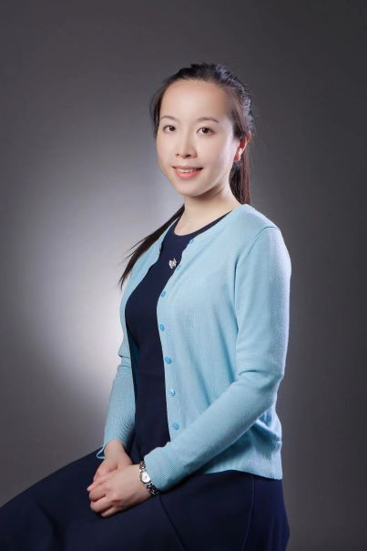

Qian HE, Ph.D.Professor, University of Electronic Science and Technology of China for Members-at-Large |
 |
To plow SPS garden deeper for reaping more fruits of collective growth and joy
| 2014-2018 | Associate Editor for IEEE Signal Processing Letters |
| 2015-2021 | Sensor Array and Multichannel Signal Processing (SAM) Technical Committee member |
| 2017-2020 | Chair of IEEE SPS Chengdu Chapter |
| 2020 | Technical Co-Chair of IEEE 11th SAM Workshop held virtually in Hangzhou, China |
| 2021-2022 | PROmotinG DiveRsity in Signal ProcESSing (PROGRESS) Organizing Committee member |
| 2021-current | IEEE SPS Young Professionals (YP) Committee member |
| 2021-current | Chair of YP Engagement and Career Training Subcommittee |
| 2023-current | Signal Processing Theory and Methods (SPTM) Technical Committee member |
| 2023-current | Regional officer for Region 10 (Asia and Pacific) in SPTM TC |
Please vote at https://eballot4.votenet.com/IEEE (Election Period: Aug 15 - Oct 2, 2023)